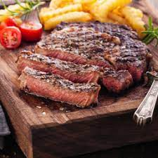

Rib-Eye Steak

This steak recipe is sure to spice up your Sunday night
Ingredients
- 1 bone-in rib-eye steak
- Kosher salt and freshly ground black pepper
- 1 tbsp canola oil
- 3 tbsp unsalted butter
- 3 sprigs fresh thyme
- 2 sprigs fresh rosemary
Preparation
- Using paper towels, pat both sides of the steak dry; season generously with 1 1/4 teaspoons salt and 1/2 teaspoon pepper.
- Heat a medium cast iron skillet over medium high heat until very hot, about 1-2 minutes; add canola oil.
- Place the steak in the middle of the skillet and cook, turning every 2-3 minutes, until a dark crust has formed on both sides, about 12-14 minutes.
- Reduce heat to medium low. Push steak to one side of the skillet; add butter, garlic, thyme and rosemary to opposite side of the skillet, tilting the skillet towards the butter and cooking until butter is foaming, about 30 seconds to 1 minute.
- Working carefully, spoon butter over steak for 1-2 minutes, turning over once, until it reaches an internal temperature of 120 degrees F for medium rare, or until desired doneness. Let rest 15 minutes before slicing.
- Serve immediately.